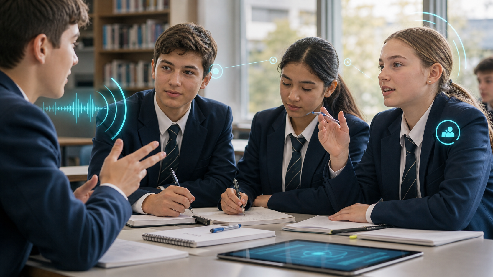

Workplace why
Skill Quest
Launch
Start your private job-skills snapshot.
0 XP
0 badges
Year 9 job skills
Turn everyday experience into job speak
As you get closer to 14, casual and part-time work starts becoming real for some people. Not everyone will look for work straight away, but it is useful to start thinking about your skills and experience from an employability perspective.
Quest progress
0%
Private setup
First name only
This only labels your draft while you work. Do not enter a surname.
Privacy note: this app does not send your answers anywhere. Your work stays on this device unless you print, save, or share it. It does not ask for your PC class or surname. Do not include private details about yourself or anyone else. Use Clear work if you want to remove your draft from this browser.
Video 1: What are employability skills?
Arcade check
Skill Sorter
Spot the employability skills and separate them from emotions, courses, and qualifications.
Card 1
Communication
Is this an employability skill?Choose where the card belongs.
Communication
Communication is more than talking
In a workplace, communication means helping people understand what is happening. It includes listening, speaking, checking, and choosing words that fit the situation.
Video 2: Communication
Listening can look like
Paying attention, remembering, checking
You listen when you focus, remember instructions, ask a question, or repeat back the important part.Speaking can look like
Sharing clearly, explaining, choosing words
You speak well when you use clear words, organise your ideas, adjust for the person, or use an example.
You might already do this when
You help someone understand
Explaining a task, asking a coach a question, helping a sibling, checking instructions, or messaging responsibly all count.My communication
Where have you already used communication?
Choose anything that makes you think: yes, I have done that before.
Collaboration
Collaboration is teamwork you can explain
In a workplace, teamwork means working with other people so the job gets done. It can be quiet, practical, helpful, and reliable.
Video 3: Collaboration
Workplace why
Most jobs rely on other people
People share tasks, swap information, cover each other, keep to time, and notice what the team needs next.Teamwork can look like
Doing your part reliably
You collaborate when you take responsibility, keep to time, finish your part, or let people know if you need help.Teamwork can look like
Supporting and including others
You collaborate when you encourage someone, include their idea, share equipment, or help the group choose a fair plan.You might already do this when
You help the group move forward
Group assignments, sport, productions, home jobs, volunteering, clubs, and helping friends can all show teamwork.My teamwork
Where have you already used collaboration?
Choose anything that feels familiar from school, sport, home, hobbies, or community activities.
Communication job speak
Build one strong communication example
Pick one communication moment. Keep it honest, specific, and right-sized.
Keep it real
Small examples count, but do not make them bigger than they are. Describe what actually happened,
what you actually did, and the small result.
Privacy check
Do not enter surnames, photos, addresses, phone numbers, health details, family issues, or names of
other students. Use general wording if the example is personal.
Skills PDF
Communication examples saved
Final unlock
My Employability Snapshot
This section is designed to print or save as a PDF.
Year 9 Job Skills
My Skills PDF
My skill examples
Resume bullets
Interview practice answers
Skill to build next
Teacher hand-in
Upload your snapshot in Microsoft Forms
Save or print your skills PDF first. Then use the Microsoft Form to upload it and enter your name and PC class in the approved school system.
Complete a small step to earn the first badge.
Badge unlocked
Nice work. Your snapshot is getting stronger.